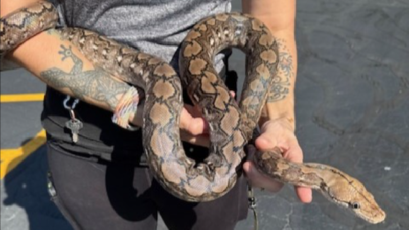
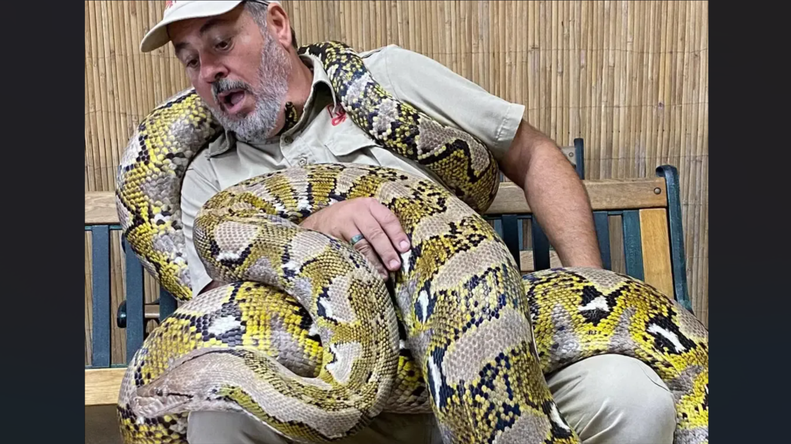

D1 · Story Frame
This page will go over the size differences between the different localities of retics and you'll be able to infer how those differences affect their handleability and care. These differences show how the super dwarf local of retic makes for the more manageable pet. Sources for this data can be found at the bottom of this page under System and Documentation.
D2 · Editorial Figures


D3 · Accessible Data Table
| Locale | Classification | Average Length | Average Weight | Average Lifespan |
|---|---|---|---|---|
| Mainland Southeast Asia | Mainland | 18-25 feet | 150-200 lbs | 30+ years |
| Selayer | Dwarf | 9-13 feet | 30-45 lbs | 20+ years |
| Jampea | Dwarf | 8-12 feet | 35-40 lbs | 20+ years |
| Madu | Super Dwarf | 6-9 feet | 18-25 lbs | 20+ years |
| Kalatoa | Super Dwarf | 6-9 feet | 18-25 lbs | 20+ years |
| Karompa | Super Dwarf | 5-7 feet | 15-20 lbs | 20+ years |
Sourced from Katien Safari, Hell Creek Reptiles, and Morph Market. There is not much known yet on the average lifespan of dwarf locale retics, so these numbers are a low community estimation.
D4 · Responsive SVG
D5-D6 · System and Documentation
Extend Module 1 patterns, then link your sources, asset credits/licenses, test record, transformation notes, and AI disclosure.
Person holding a super dwarf retic image by Reptile Rapture.
Person holding a mainland retic image by Jay Prehistoric Pets.
Reticulated Python Data sourced from Katien Safari, Hell Creek Reptiles, and Morph Market.
Test record
No AI was used in the making of this data story.